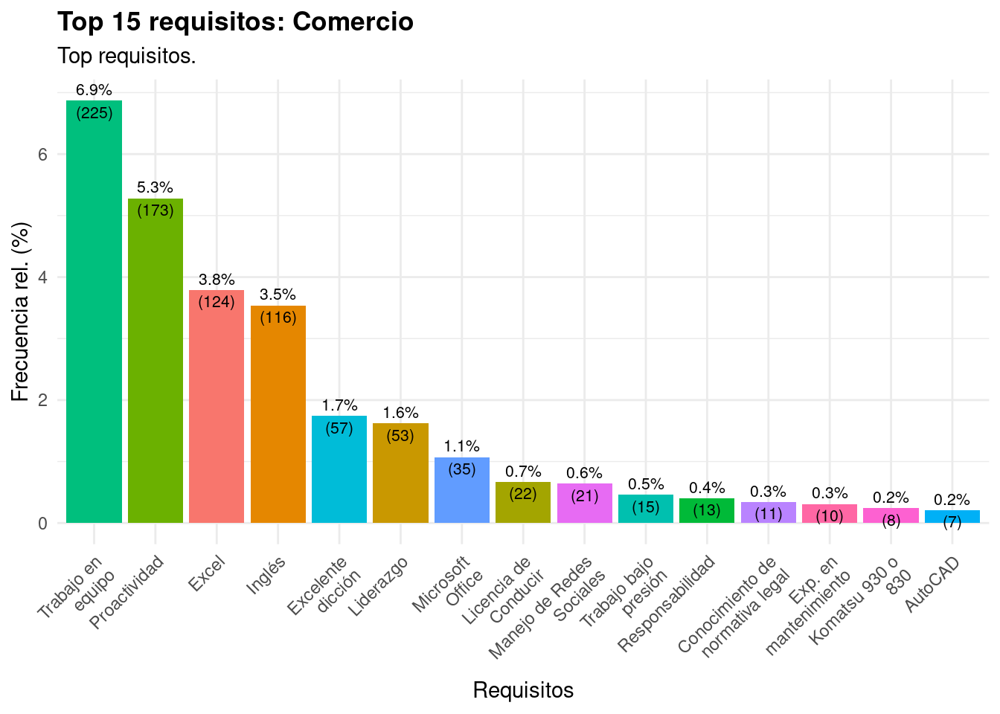
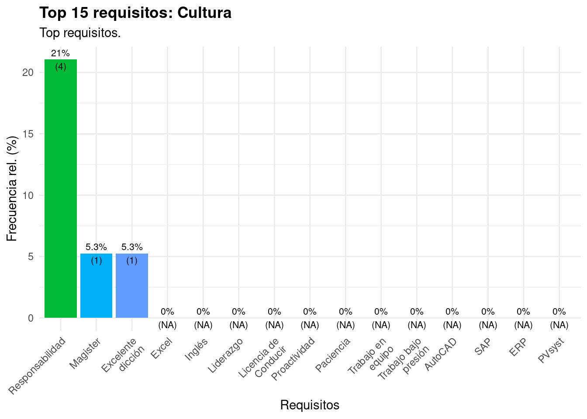
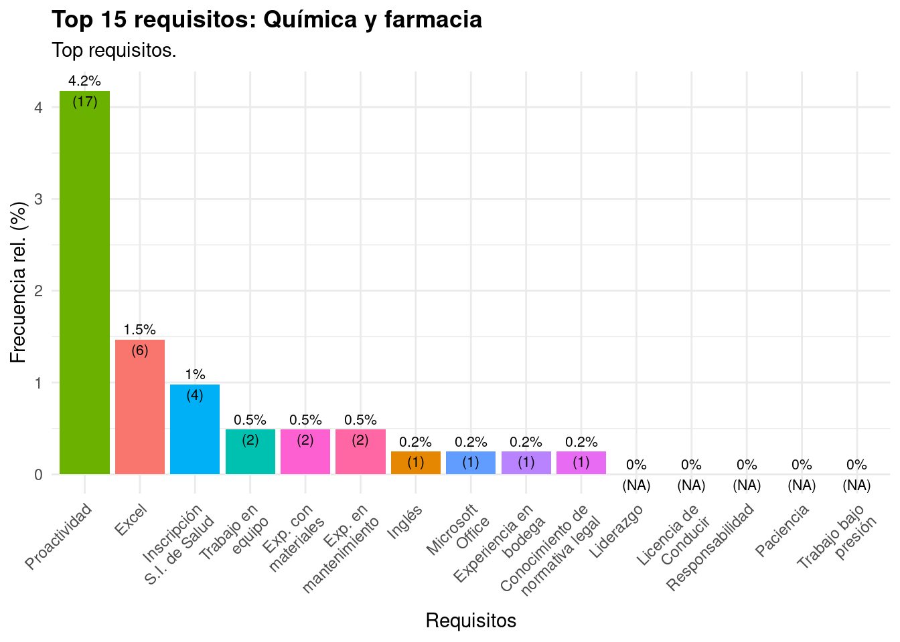
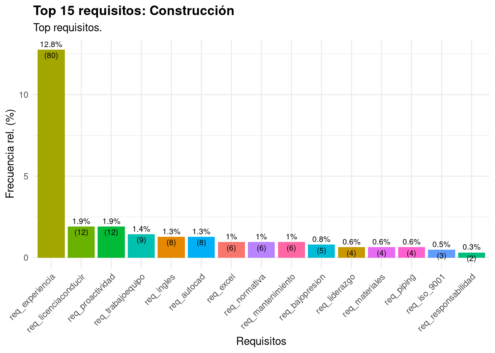
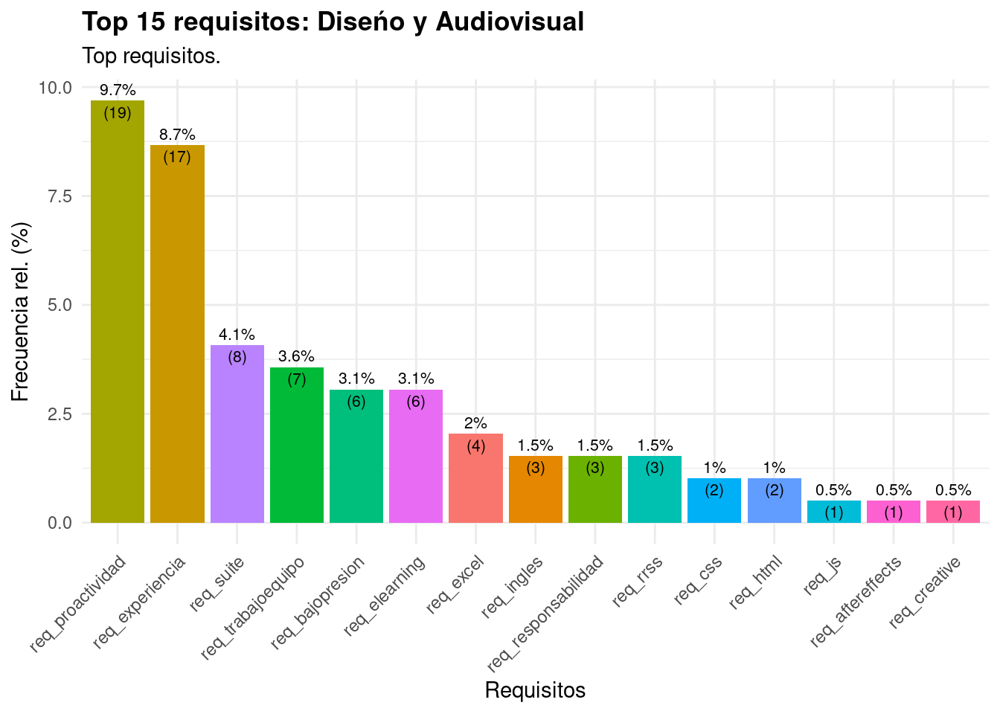
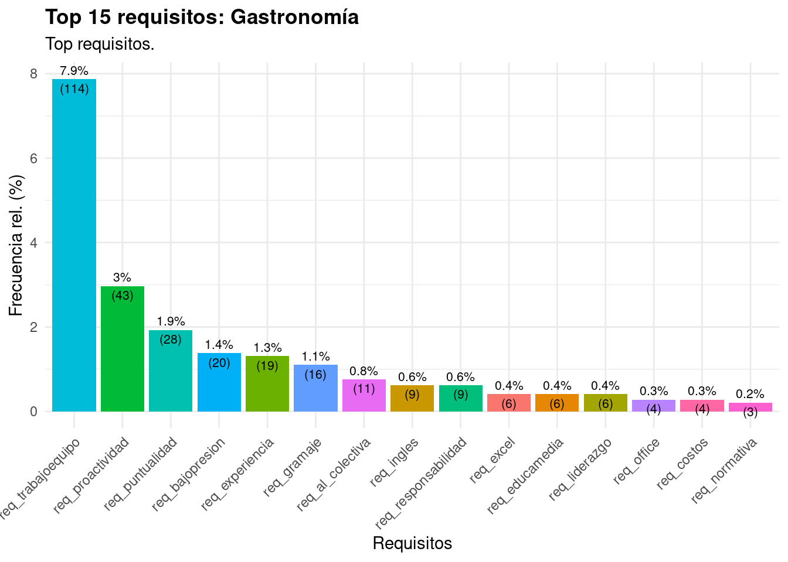
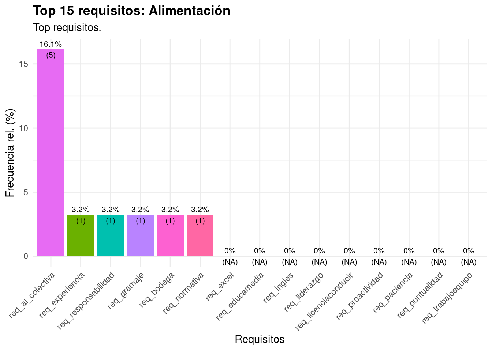
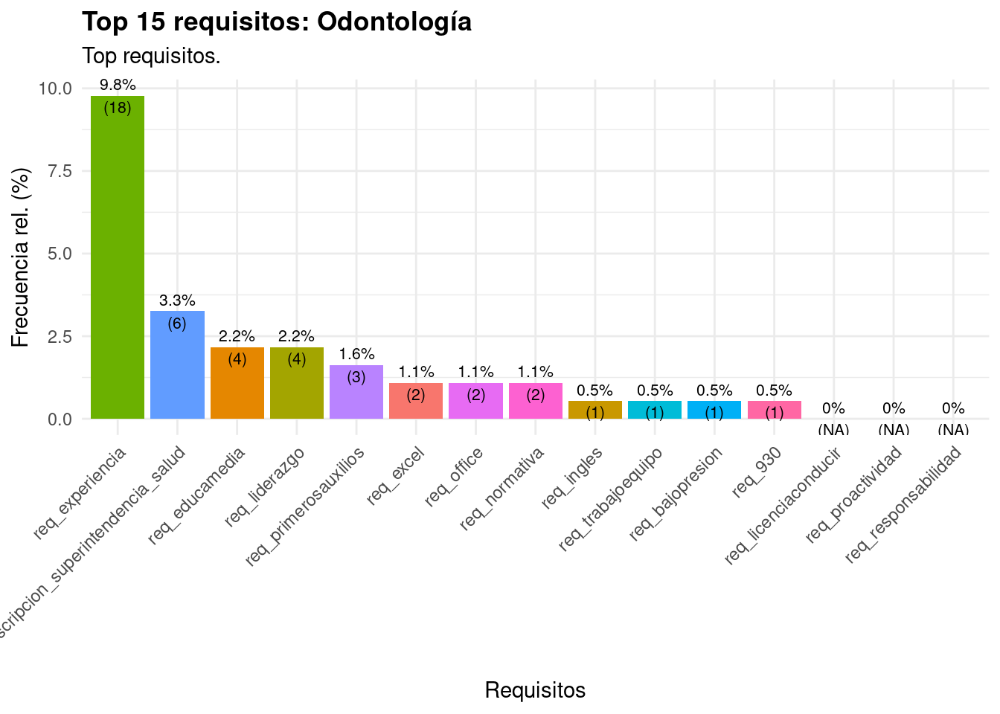

3 Requisitos según categoría ocupacional
Esta es la sección principal del informe. Para cada una de nuestras categorías ocupacionales, listamos los requisitos más indicados. Además, presentamos una muestra de avisos laborales, así como vienen en los portales.
3.1 Requisitos en Logística
En logística, los requisitos más comunes son tener experiencia en manejo de bodegas, ser proactivo, y poder trabajar en equipo. Se menciona Excel y otros programas de la línea Office.

Abajo hay ejemplos de frases representativos para la clase “Logística”, en el formato original.
[1] “-Nivel de inglés intermedio.”
[2] “De preferencia nivel inglés intermedio/avanzado”
[3] “-Nivel de inglés intermedio.”
[4] “Conocimientos avanzados de excel”
[5] “-Tener un nivel de inglés fluido que te permita realizar presentaciones a equipos globales y escribir reportes en un lenguaje formal.”
3.2 Requisitos en Administración y Finanzas
En el área Administración y Finanzas se repite Excel, y también es frecuente la mención al trabajo en equipo y la proactividad.

Abajo hay ejemplos de frases representativos para la clase “Administración y Finanzas”, en el formato original.
[1] “-Manejo de excel intermedio-avanzado.”
[2] “Tu principal responsabilidad será administrar cartera actual de clientes con un foco en la preservación del patrimonio de los clientes vigentes con un servicio de excelencia y cercanía con su cartera asignada. Además de un constante foco en la captación de nuevos clientes de altos patrimonios; teniendo como principales funciones:”
[3] “-Te defiendes en inglés”
[4] “- Dominio de excel intermedio - avanzado.”
[5] “Nivel de inglés intermedio”
3.3 Requisitos en Computación y Redes

Abajo hay ejemplos de frases representativos para la clase “Computación y Redes”, en el formato original.
[1] “•en: - Electricidad, Electromecánica, software diferentes clientes, Nokia, Huawei, Ericsson, etc.”
[2] “-Deseable manejo de inglés en nivel intermedio”
[3] “•y conocimiento de equipamiento RF Ericsson (instalación excluyente, comisionamiento opcional).”
[4] “-inglés intermedio”
[5] “•en: - Electricidad, Electromecánica, software diferentes clientes, Nokia, Huawei, Ericsson, etc.”
3.4 Requisitos en Prevención de riesgos

Abajo hay ejemplos de frases representativos para la clase “Prevención de Riesgos”, en el formato original.
[1] “-Conocimiento y experiencia en seguridad en tienda y oficina. (mín. 5 años)”
[2] “-Conocimiento de los requisitos legales nacionales/locales”
[3] “-Contar con título profesional de Ingeniero en Prevención de Riesgos”
[4] “-Experiencia profesional de 3 años”
[5] “Título profesional de Ingeniero Ejecución en Prevención de Riesgos, o en su defecto Constructor Civil con Especialización en Prevención de Riesgos.”
3.5 Requisitos en Comercio

Abajo hay ejemplos de frases representativos para la clase “Comercio”, en el formato original.
[1] “Dominio inglés: deseable”
[2] “- Capacidad de ejercer liderazgo, entusiasmo e iniciativa.”
[3] “-Te defiendes en inglés, especialmente en la escritura”
[4] “•: Comunicación oral y escrita, capacidad de escucha, habilidades numéricas y analíticas, negociación, capacidad de respuesta, iniciativa, organización, proactividad, orientación al orden y detalle.”
[5] “-Nivel de inglés intermedio(deseable)”
3.6 Requisitos en Cultura

3.7 Requisitos en Auditoría y Contabilidad

Abajo hay ejemplos de frases representativos para la clase “Auditoría y Contabilidad”, en el formato original.
[1] “- Haber egresado de una carrera Técnica de nivel superior en Contabilidad o Administración de empresas o relacionada.”
[2] “-1-2 años como analista de remuneraciones”
[3] “-Contar con al menos 1 año de experiencia relacionada.”
[4] “-Conocimiento Normas Internacionales de Información Financiera (NIIF)”
[5] “-Conocimiento y preparación de Análisis de cuenta , Estados Financieros y sus notas.”
3.8 Requisitos en Química y Farmacia

3.9 Requisitos en Enfermería
 [1] “-Título de Médico con registro en la superintendencia de salud”
[2] “- Contar con SIS de la superintendencia de Salud”
[1] “-Título de Médico con registro en la superintendencia de salud”
[2] “- Contar con SIS de la superintendencia de Salud”
[3] “- Contar con SIS de la superintendencia de Salud”
[4] “- Contar con SIS de la superintendencia de Salud”
[5] “- Contar con SIS de la superintendencia de Salud”
## Requisitos en Publicidad y Relaciones Públicas

[1] “Proactividad”
[2] “-Te defiendes en inglés”
[3] “-Manejas Office y Excel es tu fuerte”
[4] “• Conocimientos en Wordpress y HTML.”
[5] “• Conocimientos en Wordpress y HTML.”
3.10 Requisitos en Construcción

Abajo hay ejemplos de frases representativos para la clase “Construcción”, en el formato original.
[1] “• Excel Avanzado”
[2] “- Manejo avanzado de inglés e intermedio portugués”
[3] “- Manejo avanzado de inglés e intermedio portugués”
[4] “-Licencia de conducir clase B”
[5] “-Inglés nivel intermedio”
3.11 Requisitos en Diseño y Audiovisual

[1] “-Manejo de Redes Sociales”
[2] “-Wordpress.”
[3] “-Community Management.”
[4] “- Conocimiento gráfico, Ilustrator y Photoshop (Intermedio Avanzado)”
[5] “-Inglés intermedio”
3.12 Requisitos en Geología

3.13 Requisitos en Gastronomía

[1] “Persona con capacidad de liderazgo, conducción de equipos de trabajo.”
[2] “-Formación educacional: enseñanza media completa o cursando y/o cursando estudios superiores”
[3] “•al servicio de excelencia”
[4] “• Deseable idioma inglés”
[5] “•al servicio de excelencia”
3.14 Requisitos en Hotelería y Turismo
 [1] “2 años”
[1] “2 años”
[2] “-ASEO Y LIMPIEZA”
[3] “-Salud compatible con trabajo en altura geográfica”
[4] “-Experiencia mínima de 3 años en cargos similares”
[5] “-Salud compatible con trabajo en altura geográfica”
## Requisitos en Maquinaria y Automotriz

Abajo hay ejemplos de frases representativos para la clase “Maquinaria y Automotriz”, en el formato original.
[1] “-Excel nivel Intermedio”
[2] “- Poseer conocimientos en Excel y AutoCAD.”
[3] “-Inglés nivel intermedio”
[4] “-Office avanzado”
[5] “-Excel nivel Intermedio”
3.15 Requisitos en Electricidad

Abajo hay ejemplos de frases representativas para la clase “Electricidad”, en el formato original:
[1] “-Experiencia en mantenimiento de Palas”
[2] “-Licencia conducir A4 (Excluyente)”
[3] “-Experiencia en mantenimiento de Palas y Equipos.”
[4] “-Conocimientos en mantenimiento de grupos generadores, Etc.”
[5] “Idiomas: inglés básico”
3.16 Requisitos en Agrícola
 [1] “-Vehículo propio y licencia de conducir clase B”
[1] “-Vehículo propio y licencia de conducir clase B”[2] "
- Técnico con carrera de 8 semestres y/o Universitario con carrera de 10 semestres, deseable Ingeniero Agrónomo, Comercial, Civil, Economista, Médico Veterinario u otra profesión afín
- Licencia de conducir Clase B
[4] “-Técnico o Profesional de áreas Administrativas o Agrícolas”
[5] “-Te defiendes en inglés escrito y hablado”
3.17 Requisitos en Alimentación
[1] “• Contar con 2 años de experiencia en alimentación colectiva.”
[2] “-Experiencia comprobable en empresas prestadoras de servicios a la minería y/o alimentación colectiva (excluyente)”
[3] “• Experiencia de 2 años en el rubro de alimentación colectiva, deseable en servicio de salud.”
[4] “experiencia de 6 a 1 año en servicios de alimentación colectiva”
[5] “• Contar con experiencia en alimentación colectiva.”
3.18 Requisitos en Tecnología Médica
[1] “Excel y Power Point.”
[2] “? Experiencia de un año de desempeño en laboratorio.”
[3] “? Trabajo en equipo”
[4] “* Ingeniero(a) Ejecución Metalurgia, Químico, Técnico en metalurgia o profesional afín, mínimo 5 años de experiencia en áreas de minería relacionada con pruebas de planta piloto, laboratorios, manejo de soluciones, balances, etiquetado, traslado de muestras, armado de batch y almacenamiento de muestras.”
[5] “* Manejo computacional Office a nivel de intermedio: Excel, Word, Outlook, PowerPoint, etc.”
3.19 Requisitos en Medioambiente
[1] “• 2 years of experience in Mining Works and in matters associated with fauna and flora, processing of management plans and sectoral permits with CONAF, with scope in monitoring the operating system and quality of surface and underground water, industrial and hazardous waste management, implementation and maintenance territorial planning”
[2] “• use and management of ArcGis, QGis.”
[3] “•de sistema de regulaciones de Sernageomin.”
[4] “•para viajar a terreno y licencia de conducir.”
## Requisitos en Veterinario

3.20 Requisitos en Odontología
Abajo hay ejemplos de frases representativos para la clase “Odontología”, en el formato original.
[1] “-Ser titulado/a de alguna carrera profesional del área de salud”
[2] “- Curso de evaluadores del sistema nacional de acreditación de prestadores institucionales de salud. (excluyente)”
[3] “-Deseable experiencia en rubro de salud”
[4] “* Tener salud compatible con el desempeño del cargo.”
[5] “-Experiencia en el cargo en rubro de salud”